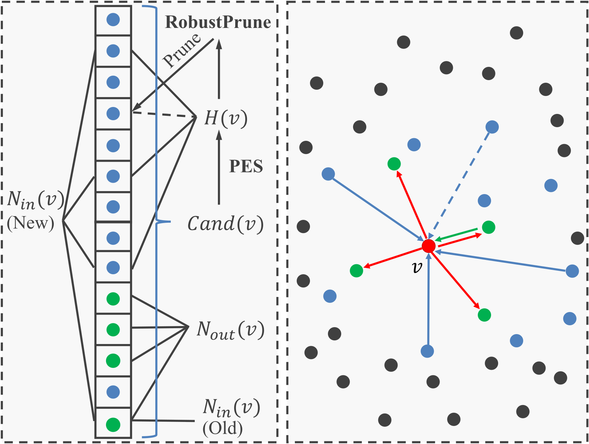
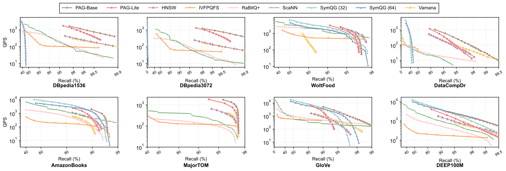
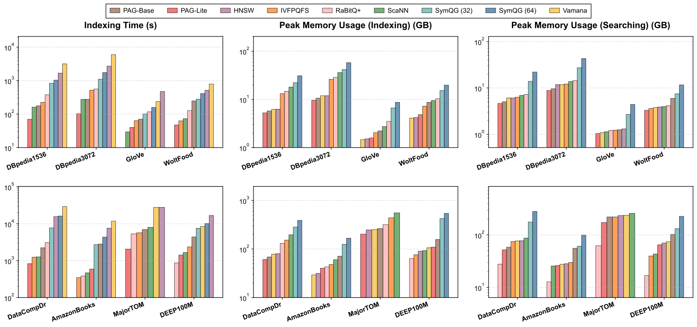
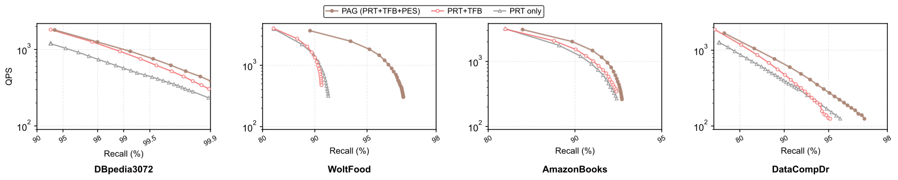
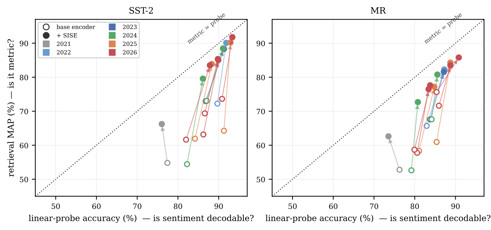

分享 SHARE
做向量检索基础设施、或者在 RAG 和推荐里自建 ANN 索引的团队值得读。这篇论文提出 PAG（Projection-Augmented Graph），在图索引里加了一层随机投影：搜索时先用投影估一下邻居能不能进入候选集，估计“能”的才算精确距离；建图时用同一套投影统计量多找一些入边。作者报告，在 6 个近几年的 embedding 数据集上，单线程检索的 QPS 最多是 HNSW 的 5 倍，建索引时间只有 HNSW 的 20% 到 40%，维度从 384 到 3072、K 从 10 到 1000 都保持领先，而且支持在线插入。我认为它的价值在于把“快检索、快建图、可插入”放进同一个框架，思路清楚；但它把原始向量存成 16 位浮点，而 HNSW 和 Vamana 存 32 位，内存和速度的对比里混进了这一项，几个最亮眼的高维结论还受到基线实现缺陷的影响。
它到底在解决什么问题？
作者的出发点是：老的 ANN 评测（比如 ANN-Benchmarks）多用 SIFT、GIST 这类二十多年前的手工图像特征，只比 K=10 时的 QPS-召回曲线；现在的应用要求更多。论文列了六项需求：检索快（D1）、建索引快（D2）、内存适中且可调（D3）、能应对上千维的 embedding（D4）、K 从 10 到上千都稳定（D5）、支持在线插入（D6）。
现有几类方法各有短板。图索引（HNSW、Vamana）检索快，但建图慢，每一步都要算精确距离；量化方法（IVFPQ、ScaNN、RaBitQ+）建得快、省内存，但 QPS-召回不如图；量化图（SymQG）检索很快，但对数据分布敏感，在高维、大 K 和插入上表现差；投影加图的方法，比如作者团队此前的 KS2（基于随机投影的路由测试），减少了检索时的精确距离计算，代价是建图更慢、内存更大、不好插入。
用一个示意场景贯穿全文：某团队有一个 100 万篇文档的知识库，用 3072 维的 text-embedding-3-large 编码，每天新增几千篇，在线检索取前 100 篇再精排。这个场景同时碰到高维、大 K、持续插入三件事，正是 PAG 想覆盖的情况。
核心思路：精确距离只在需要时才算
图索引的检索是贪心游走：从当前节点 出发，看它的每个出邻居 离查询 多远，近的放进工作集 ，再从工作集里挑下一个节点继续走。主要开销在算 ，每次都是一个 3072 维向量的运算。可大多数邻居算完才发现比 里最远的那个点还远，进不了工作集，这些计算白做了。
PAG 的做法是先做一个便宜的测试，只回答“ 有没有可能进入工作集”。作者借用 KS2 的结论：在已存好向量模长的前提下，“ 比当前最远点 更近”等价于向量 和 的夹角余弦超过某个阈值 。这个阈值只用三个距离就能算出： 在走到 之前已经算过， 是工作集里现成的，边长 按论文的说法可以预先算好，至于检索时从哪里读取，论文只交代到这一步。
剩下的问题是怎么不算高维内积就估出这个夹角余弦。PAG 先对所有数据做一次固定的随机正交变换，再把 维切成 段，每段 维，每段配一本码本，里面是 个随机旋转得到的单位向量，再统一乘以 。从每段码本各挑一个向量拼起来，就是一个长度正好为 1 的投影向量。建图时，对每条边 ，在每一段里挑出和 这一段夹角最小的码本向量（索引只占 4 bit），拼成投影向量 ，同时存下 和 的夹角余弦 ，以及 在这些码本向量上的投影值。这个变换矩阵是固定的，查询进来时先乘以同一个矩阵，再做后面的计算，所以查表结果和边上存的统计量在同一个坐标系里。查询开始时，先把 在全部 个码本向量上的投影算一遍，存成投影表，每个查询只算这一次。之后检查任何一条边，只要按这条边存的 个索引查表、减去 的投影值、再相加，就得到 在 上的投影，除以已知的 就是 。这一步只有 次查表和加减，不碰 维向量。论文的定理 3.1 证明，在 和每个子空间维度都足够大时， 近似服从以 为均值的高斯分布，其中 就是要估的那个夹角。于是测试函数写成：
值为正才去算精确距离。论文把这个测试叫 PRT（Probabilistic Routing Test）。复杂度上，HNSW 检索是 ，PAG 是 ， 是访问的节点数， 是最大出度， 是通过测试的邻居比例，作者说实际一般低于 0.2。 远小于 ，附录建议在 8 到 之间取，实验里用的是 16 到 128。

拿示意场景说：查询向量走到节点 ， 有 7 个邻居。普通 HNSW 要算 7 次 3072 维距离；PAG 先做 7 次投影测试，每次只涉及 个子空间上的查表和少量乘加，假设只有 2 个通过，就只算 2 次精确距离。
三个组件怎么配合
第一个组件是 TFB（Test Feedback Buffer）。PRT 是概率测试，会有假阳性：通过了测试，精确距离算出来却进不了工作集。以前的 KS2 等方法直接丢掉这些点，算过的精确距离就浪费了。为什么需要专门处理？因为由定理 3.1 的高斯分布可知，这些假阳性离查询通常只比阈值远一点，后面几轮很可能用得上。TFB 把检索分成多轮：每轮在一个较小的工作集 上做最佳优先搜索，被挤出 的点放进环形缓冲 ，假阳性放进 ； 里的点都访问过，这一轮就结束：这些点转入结果列表， 清空，两个环合并、按距离排序，先填满 ，其余放回 。新一轮 里的点比上一轮远，最远点 也更远，测试的阈值随之放宽，上一轮的假阳性这时多半能进入 ，而它们的精确距离已经算过，不必重算。检索时 的大小取 10 和 K 中较大的那个。检索预算由参数 efS 控制，论文正文称它是最多访问的节点数；算法里的实际做法是把 efS 除以 的大小（向上取整）当作最多跑几轮， 空了就提前结束。由于一轮之内 还会不断换进新点，累计访问量可能超过 efS，所以 efS 更适合理解成按轮计的近似预算。阈值按 里最远的点算，而不是按整个结果队列，所以 小、阈值紧，元素移动也快。
第二个组件是 PES（Probabilistic Edge Selection）。HNSW、Vamana 建图时用 RobustPrune 决定边，规则是：对候选节点 ，如果 的某个出邻居 离 不比 远、离 也不比 远，就认为从 经 能走到 ，直接边 多余，不保留；找不到这样的“见证点”才保留。给新节点 找入边时，候选只限于 的出邻居。已有研究指出，这样一些节点的入度会很小，检索时几乎走不到，这是 HNSW 在某些真实数据上表现差的原因之一。直接扩大候选集又很贵，RobustPrune 对每个候选的最坏开销是 。建图时，被插入的新节点 就是这次搜索的查询： 进来时先算好自己的投影表，于是访问每个节点 时得到的 ，估的是 和 的夹角。PES 用的就是这组现成的估计值，只是换一个阈值 ：夹角余弦超过它，就意味着 离 比 近。PES 计算 ，也就是看 的出邻居里有没有哪个的估计值超过阈值：结果为正，说明可能存在见证点；结果为负，说明一个都没找到。为负时，说明 这条边大概不是多余的，就记进候选缓冲 ，每个节点最多 条，之后再用 RobustPrune 批量核实。关键在于，PES 能检查建图搜索时访问过的所有节点，而不只是 的出邻居。 可以从 PRT 已有的量算出，所以每个邻居只多 的工作。

三个组件在建图时这样串起来。PAG 按顺序插入每个向量，第一步用带 PRT-TFB 的检索找到候选，再用 RobustPrune 定出边和入边；第二步用 PRT-PES 从访问过的所有节点里挑额外的候选入边，存进 ；第三步对这些候选做 RobustPrune 定出最终入边。因为建图本身就是“先搜再插”，查询加速的同时建图也加速了。在线插入沿用同一流程，区别是 PES 候选要等新插入的节点攒够一批之后才统一核实，在此之前这些候选入边还没有加进图里；核实通过的边只填进还有空位的出边槽，已有的边不动。核实开销摊到每个插入节点上是 。示意场景里每天新增的几千篇文档，就是这样逐条插进去的，不用重建索引。
实验结果说明了什么
主实验在 8 个数据集上做，6 个是近几年 embedding 模型生成的新数据，2 个是常用的老数据：
| 数据集 | 规模 | 维度 | 类型 | embedding 模型 |
|---|---|---|---|---|
| DBpedia1536 | 999,000 | 1,536 | 文本 | text-embedding-3-large |
| DBpedia3072 | 999,000 | 3,072 | 文本 | text-embedding-3-large |
| WoltFood | 1,719,611 | 512 | 图像 | clip-ViT-B-32 |
| DataCompDr | 12,779,520 | 1,536 | 文搜图，查询分布外 | coca_ViT-L-14 |
| AmazonBooks | 15,928,208 | 384 | 文本 | all-MiniLM-L12-v2 |
| MajorTOM | 56,506,400 | 1,024 | 图像 | DINOv2 |
对比方法有 HNSW、Vamana、SymQG、ScaNN、IVFPQFS、RaBitQ+。PAG 有两个参数版本：PAG-Base 追求检索速度，PAG-Lite 追求快建图和小内存。检索单线程，建索引用 112 个线程，机器是一台支持 AVX-512 的 Xeon 服务器。默认 K=100。

检索速度上，PAG-Base 在 6 个新数据集上都是最好的，只有 WoltFood 的高召回区间例外，相对 HNSW 最多快 5 倍；老数据上，GloVe 最好，DEEP100M 仅次于 SymQG。PAG-Lite 在 DBpedia1536、DBpedia3072、MajorTOM 上排第二。建索引时间上，PAG-Base 只要 HNSW 的 20% 到 40%，多数情况比 SymQG 快；PAG-Lite 和量化方法相当，在高维数据上最快。内存上，PAG-Lite 在 8 个数据集里有 4 个的建索引和检索内存都最小；PAG-Base 在低维数据上比 HNSW 用得多，高维时差距可以忽略。

K 变化时，K=10 下 PAG-Base 和 SymQG 相当，在 95% 以上的高召回区间，除 DEEP100M 外都更好；K=1000 时 PAG-Base 仍是最好，SymQG 明显变差，K 从 200 到 800 时两者差距越拉越大。在线插入实验里，从语料中随机抽 1 万个向量做插入、1 万个做查询，分成 20 批交替执行，PAG-Base 的插入和查询都比 HNSW 快，插入甚至比 HNSW 的查询还快；和 HNSW 的插入相比，最多快 5 倍。这说明 把投影测试同时用在建图和检索上，确实能让图索引在快建图和快检索之间不必二选一。

消融显示，TFB 在 4 个数据集上都缩短了建索引时间并提升了检索性能；PES 进一步提升检索，在 WoltFood 上最明显，没有 PES 时召回率在 90% 出头就上不去，加上 PES 后曲线整体右移，而建索引时间几乎不变。PES 的收益在难的数据上最明显，这和它的设计目的对得上：多补入边，让入度很小的节点在检索时也能被走到。
我认为它的局限
第一，存储精度不一致。附录说明 PAG 把原始向量存成 16 位浮点，HNSW 和 Vamana 存 32 位，所以 PAG 的数据部分内存更小。精确距离计算读的数据量也随之减半，这对检索和建图速度都可能有帮助。论文缺一个“HNSW 也用 16 位存储”的对照，内存和速度的优势里有多少来自这一项，现有结果分不开。
第二，基线有实现问题，参数也按数据集调。SymQG 在 1536 和 3072 维的数据上召回率很低，作者在脚注里说，原因是它的源码为了并行计算采用了 16 位无符号整数类型，维度高时数值溢出。这意味着“PAG 在高维上远胜量化图”的结论，有一部分是在和一个出了故障的基线比。在 GIST 和 SIFT10M 上（作者说这两个数据稀疏、适合量化），K 为 10 或 100 时 SymQG 的 QPS 仍然更高；DEEP100M 上 PAG-Base 也只排第二。PAG-Base 的参数逐个数据集设定，在 6 个新数据集上 efC（建图时每插入一个点最多访问的节点数，越大图质量越高、建图越慢）在 1000 到 2000，WoltFood 上 M 取 128，而 HNSW 用 efC=1024（MajorTOM 上是 512）、M=32。附录 G.5 在相同 efC 下做了补充对比，PAG-Base 依然更好，但这组对照只对齐了 efC，M 的差别仍在。
第三，结论主要靠曲线，评估面也有限。“最多 5 倍”是曲线上的最大差距，没有给固定召回率下的数值表；检索只测了单线程，没有多线程吞吐，也没有和 DiskANN 这类磁盘索引比。在线插入实验只插了 1 万个向量，没有删除，也没有长时间插入后图质量会不会退化的测试。定理 3.1 是渐近结果；在有限的码本大小 和分段数 下，只有 KS2 论文里的一条较弱保证：夹角余弦确实不小于阈值 时，测试通过的概率至少为 0.5。
一个检索团队可以怎么试
- 拿自己的 embedding 和真实查询，在 95% 和 99% 两个召回率点上对比 PAG-Base 与 HNSW 的单线程和多线程 QPS，同时加一组 16 位存储的 HNSW 作对照，把存储精度的影响剥离出来。
- 如果业务的 K 在几百以上（推荐召回、图片检索），重点看大 K 下的曲线，这是论文里 PAG 优势最稳定的地方。
- 有持续写入的场景，模拟一周的插入量，定期测召回率，看图质量是否稳定；同时记下每天的插入耗时，和重建 HNSW 的时间比较。
- 参数先按附录建议起步：快检索用 efC 不小于 800，快建图和小内存用 efC 不大于 200，M 取 32 或 64， 在 8 到 之间，再按内存预算调。
结论和评价
最关键的启发是：图索引的精确距离计算大多是白做的，用一个便宜的概率测试先筛一遍，同一套统计量还能顺带改进建图，检索、建图、插入可以一起变快。
| 维度 | 评价 |
|---|---|
| 问题重要性 | 高。高维 embedding、大 K、持续插入正是 RAG 和推荐召回的常态 |
| 方法创新性 | 中。PRT 沿用 KS2 等前作的思路，新意在 TFB 复用假阳性和 PES 选边，以及把投影用到建图上 |
| 实验证据 | 中。数据集新、需求覆盖全，有消融和同参数对比；但存储精度不一致、SymQG 有实现缺陷、结果只有曲线 |
| 工程成本 | 中。代码开源，实现按 AVX-512 设计，参数比 HNSW 多一个 ，要按数据集调 |
| 是否值得尝试 | 值得在自己的数据上做对比，尤其是高维、大 K、持续插入的场景，记得加 16 位存储的 HNSW 对照 |
读完这篇，你觉得
夜读鸮记下了，谢谢你的反馈。
点一下即可，无需登录；再点一次撤回。只统计匿名次数，不记录你是谁。
相关论文RELATED
 Infra · 2026-10-29Lossless Compression of Proximity Graph Indexes for Efficient Approximate Nearest Neighbors Search向量检索的 HNSW 图索引里，向量本身已经常被量化压小，邻接表里的边反而成了内存大头，但边要在每次查询走图时现场解码，压缩不能拖慢查询。eBay 和比萨大学的这篇工作先离线给节点重新编号，让相邻节点的编号靠近，再用支持 SIMD 的整数压缩器 Stream VByte 现场解码。边存储最多省下 52.7%，延迟几乎不变；在 eBay 线上部署时，边存储最多减少 44.3%，查询延迟没有变差。
Infra · 2026-10-29Lossless Compression of Proximity Graph Indexes for Efficient Approximate Nearest Neighbors Search向量检索的 HNSW 图索引里，向量本身已经常被量化压小，邻接表里的边反而成了内存大头，但边要在每次查询走图时现场解码，压缩不能拖慢查询。eBay 和比萨大学的这篇工作先离线给节点重新编号，让相邻节点的编号靠近，再用支持 SIMD 的整数压缩器 Stream VByte 现场解码。边存储最多省下 52.7%，延迟几乎不变；在 eBay 线上部署时，边存储最多减少 44.3%，查询延迟没有变差。 Infra · 2026-10-28Failure-Resilient and Verifiable Distributed Approximate Nearest-Neighbor Retrieval分布式向量库的副本能保证查得到，却不能保证查到的是真的：被攻破的副本可以返回签名合法、内容被篡改的近邻结果。TrustANN 在路由层之上加一层中间件，对每个分片，从副本回复里贪心挑出一组：数量达到设定下限，两两相似分够高（候选集合重合度加排序一致度），并覆盖设定数量的不同故障域（如可用区）；凑不齐就去找新的独立副本补，仍不够则明确返回未验证。副本在线不等于结果可信。在多节点测试里，被篡改结果被当成可信的比例从 100% 降到 0，正常负载下 p95 延迟只多 9.36%。
Infra · 2026-10-28Failure-Resilient and Verifiable Distributed Approximate Nearest-Neighbor Retrieval分布式向量库的副本能保证查得到，却不能保证查到的是真的：被攻破的副本可以返回签名合法、内容被篡改的近邻结果。TrustANN 在路由层之上加一层中间件，对每个分片，从副本回复里贪心挑出一组：数量达到设定下限，两两相似分够高（候选集合重合度加排序一致度），并覆盖设定数量的不同故障域（如可用区）；凑不齐就去找新的独立副本补，仍不够则明确返回未验证。副本在线不等于结果可信。在多节点测试里，被篡改结果被当成可信的比例从 100% 降到 0，正常负载下 p95 延迟只多 9.36%。
Retrieval · 2026-10-26Semantically Rich, Metrically Affect-Blind: A Geometric Blind Spot in Modern Text Embedders用向量检索去找用户对某个产品的不满，召回的评论往往话题都对，好评差评却混在一起。这篇论文把原因量清楚了：11 个文本向量模型里都藏着情感信息，用一个简单的线性分类器就能读出来；但检索真正用的余弦相似度几乎不看情感。在冻结的向量模型上加一个小投影头，用 CPU 训练几秒就能修好。它用几千条带情感标签的句子做对比学习，同一情感的句子拉近、不同的推远。拿一句评论去找相似句子时，情感相同的句子能更多地排到前面，衡量这一点的 MAP 最多提高 26 个点，代价是通用语义相似度基准 STS-B 的分数会掉，把修复头输出和原向量拼接后，比原向量只低 2.4 到 12 个点。
讨论
欢迎补充实验细节、复现经验或不同看法。需 GitHub 登录。
正在加载讨论…